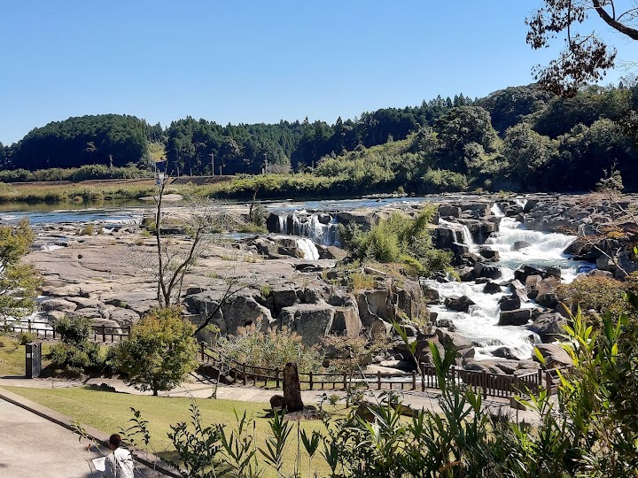
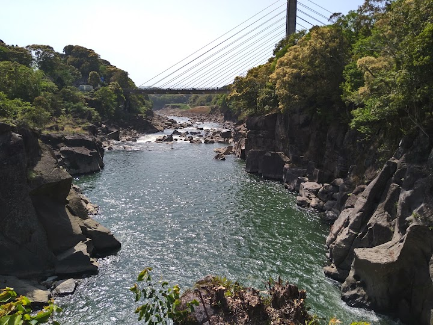
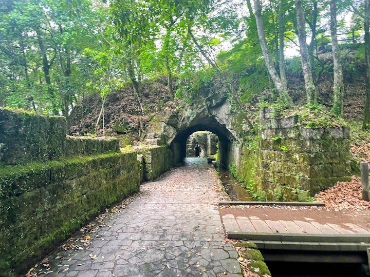
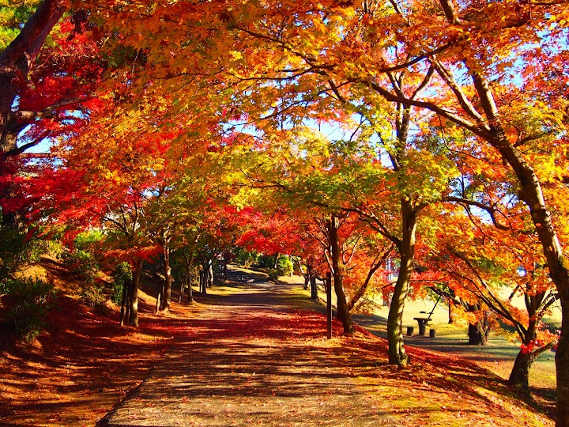
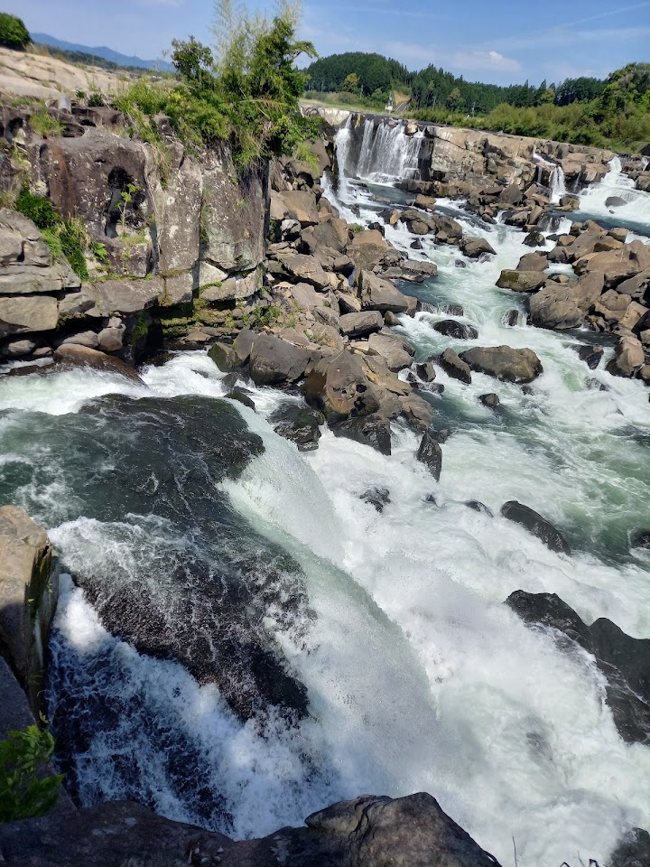

Sogi Waterfall.
Sogi Waterfall is a wide, famous waterfall where a river about 210 metres across drops about 12 metres, creating a broad curtain of water. Visitors enjoy the wildlife and the easy walk, with viewpoints close to the water.
Open in Google Maps (street view, more photos and reviews there)






Visitor tips on finding it and getting there
I visited Sogi Falls on a hot summer Saturday afternoon, and it truly lives up to its nickname — “the Niagara of the East.” The falls are wide and powerful, surrounded by dramatic rock formations and lush greenery. Despite the heat, the sound of the water thundering down had a strangely calming effect — like nature’s own white noise machine. There are several great photo spots, including a large bridge that crosses over the main road with a perfect view of the falls from above. It’s a popular stop for photos and a great way to take in the full scale of the scenery without even entering the pa